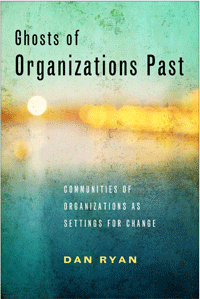

<body bgcolor="#FFFFFF" text="#000000" link="#0000FF" vlink="#CC0000" alink="#CC0000"><center><hr width="350" size="1" align="center" noshade>What happens to communities after programs and organizations pack up and leave?<hr width="350" size="1" align="center" noshade><p><a href="https://cdcshoppingcart.uchicago.edu/Cart/ChicagoBook.aspx?ISBN=9781439912546&&PRESS=temple" target="_top">Buy this book!</a> | <a href="https://cdcshoppingcart.uchicago.edu/Cart/Cart.aspx?PRESS=temple" target="_top">View Cart</a> | <a href="https://cdcshoppingcart.uchicago.edu/Cart/Cart.aspx?PRESS=temple" target="_top">Check Out</a></p><p></p></center><!--none//--><h1>Ghosts of Organizations Past</h1>
<H2>Communities of Organizations as Settings for Change</H2>
<h3>Dan Ryan</h3>
<P>cloth 1-4399-1254-8 $94.50, May 15, <FONT COLOR=#990033>Available</FONT>
<br>paper 1-4399-1255-6 $25.95, May 15, <FONT COLOR=#990033>Available</FONT>
<br>Electronic Book 1-4399-1256-4 $25.95 <FONT COLOR=#990033>Available</FONT>
<BR> 232 pp
5.5x8.25
7&nbsp;tables 29&nbsp;figures
</P><BLOCKQUOTE><I>"</I>Ghosts of Organizations<I> provides an important analysis of system collaboration around health issues. Ryan’s examination of the development and implementation of Fighting Back in New Haven—an initiative to combat drug abuse by creating program interventions from a large number of agencies—is detailed, coherent, beautifully data-anchored, and theoretically elegant. He presents a solid understanding of the relationship between the system of health care and the community. This book is strong, effective, and important."</i> <br>&#151<b>Carl Milofsky</b>, Professor of Sociology at Bucknell University and co-editor of <i>Handbook of Community Movements and Local Organizations</i></I></BLOCKQUOTE>
<P>In <I>Ghosts of Organizations Past</I>, Dan Ryan asks, “Why are urban communities such hard places to implement community improvement programs?” Looking at New Haven, Connecticut, and a now-defunct program called Fighting Back, which was created to build community coalitions against the abuse of alcohol and other drugs, Ryan shows how the normal properties of organizations generate apparent pathologies. He shows how the “ghosts,” or artifacts, of past organizations, both inhibited and enhanced Fighting Back's chances of success.
<P>Ryan draws on concepts from the study of organizations, social capital, and social networks to re-think questions such as “What kind of thing is a community?” and “Why is it so difficult to build community initiatives out of organizations?” He provides a social organizational explanation for problems familiar to anyone who has been involved in community programs, issues that are usually understood as personal incompetence, turf wars, greed, or corruption.
<P><I>Ghosts of Organizations Past</I> describes the challenges of using organizations to create change in places in dire need of it.
<BR>&nbsp;<h2>Excerpt</h2><P>Excerpt available at <a href="http://www.temple.edu/tempress">www.temple.edu/tempress</a></p>
<BR>&nbsp;<h2>Reviews</h2>
<p><i>"</i>Ghosts of Organizations Past</i> presents a very clear history and detailed case study of a particular substance abuse program implemented in New Haven. Dan Ryan provides important insights regarding the way organizational actors operate in a field of other organizations and the challenges of collaborative and integrative approaches to the social services. </i>Ghosts of Organizations Past<i> offers a very clever and useful debunking of many of the commonplace assumptions. Ryan’s historical perspective is new and a significant contribution to the literature raising a very fundamental question regarding the way we think about the success or failure of such initiatives."</i> <br>&#151<b>David K. Brain</b>, Professor of Sociology at the New College of Florida, Sarasota
<p><i>"This ethnographic study of New Haven, Connecticut, examines a community development project known as Fighting Back, oriented toward prevention, intervention, and treatment of problems related to abuse of illegal drugs and alcohol. Basing his work on participant observation and interviews, the author investigates the role of community organizations in tackling the problem of substance abuse aimed at reducing demand rather than supply.... Ryan argues that the accumulated effects of past efforts of community improvement can detract as well as contribute to community welfare. This incisive book is an important addition to the fields of urban community development, sociology of organizations, and public policy. Summing Up: Recommended. "</i><br>&#151<b><i>CHOICE</i></b>
<BR>&nbsp;<h2>Contents</h2><P>
<p>Preface
<br>Acknowledgments
<p><b>Part I: From Opportunity to Disaster (and Back Again)</b>
<br>1. The Ghosts of Organizations Past
<p><b>Part II: Disaster and Opportunity</b>
<br>2. From Disaster to Opportunity
<br>3. From Opportunity to Disaster
<p><b>Part III: Communities and Organizations</b>
<br>4. What Kind of Thing Is Community?
<br>5. What Kind of Thing Is an Organization?
<br>6. Doing Things with Organizations in Communities
<p><b>Part IV: Organizing Organizations</b>
<br>7. Doing Things with Organizations: The Cost of Organizational Diversity
<br>8. Doing Things with Organizations: The Cost of System
<br>9. Networks of Garbage Cans: The Amplification of Irrationality
<br>10. Networks and Calendar Noise
<p><b>Part V: Social Organizational Junkyards</b>
<br>11. Community as Organizational Junkyard
<br>12. Why Can’t Organizations Be Like Us?
<p>Bibliography
<br>Index
</P><BR>&nbsp;<H2>About the Author(s)</H2>
<P><b>Dan Ryan</b> is Kathryn P. Hannam Associate Professor at Mills College in Oakland, California, and Adjunct Professor of Technology and Social Science in the Iovine and Young Academy for Arts, Technology, and the Business of Innovation at the University of Southern California.</P>
<BR><H2>Subject Categories</H2>
<p><A HREF="/tempress/social.html" TARGET="_top">Community Organizing and Social Movements</a>
<BR><A HREF="/tempress/sociology.html" TARGET="_top">Sociology</a>
<BR><A HREF="/tempress/urban.html" TARGET="_top">Urban Studies</a>
</p>
<p align="center"><a href="https://cdcshoppingcart.uchicago.edu/Cart/ChicagoBook.aspx?ISBN=9781439912546&&PRESS=temple" target="_top">Buy this book!</a> | <a href="https://cdcshoppingcart.uchicago.edu/Cart/Cart.aspx?PRESS=temple" target="_top">View Cart</a> | <a href="https://cdcshoppingcart.uchicago.edu/Cart/Cart.aspx?PRESS=temple" target="_top">Check Out</a></p><p><font face="Arial" size="1"><a href="copyright.html" onMouseOver="window.status='Web Copyright Policy';return true;" onMouseOut="window.status=''" title="Web Copyright Policy">&copy;</a> 2016 <a href="http://www.temple.edu" target="new" onMouseOver="window.status='Link to Temple University home page';return true;" onMouseOut="window.status=''" title="Link to Temple University home page">Temple University</a>. All Rights Reserved. http://www.temple.edu/tempress/titles/2365_reg.html</font></p>